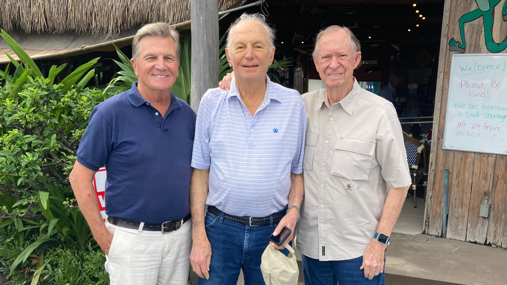
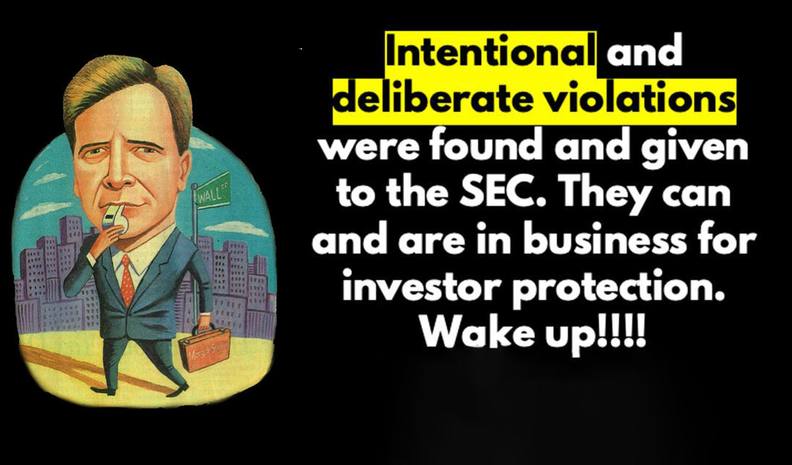
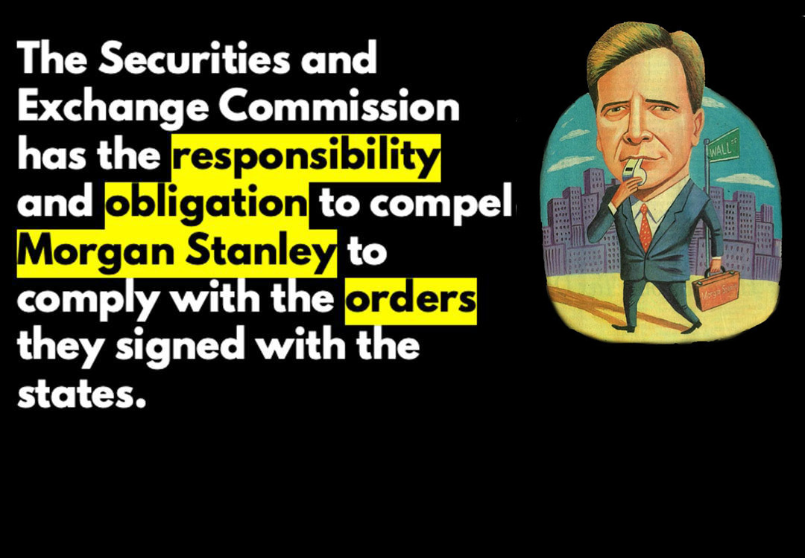

Video comments by Attorney Glenn Webber
| Policy: |

|
| Letter to Five: |
|
| FINRA News Release: |
|
| Reicher Email: |

|
| FOIA Response: |
|
| MSDW Lumberman's AWC: |
|
| Wall Street Journal Article: |
|
| Request For Follow Up: |
|
| Tennessee Rescission: |
|

| Filing Complaint to the Southern District of New York: |
|
| TCR Filing: |
|
| Scores of Pages of Unregistered Transactions Provided by State of Florida to Dana de Windt: |
|
| Additional Submission to SEC: |
|
| NASAA's Position on Kemper Lumbermen's Surplus Notes: |
|
| Florida Pages: |
|
| Letter to NASAA: |
|
| SEC Mission Statement: |
|
| Morgan Stanley: |
|
| Meeting in DC with the SEC: |

|
| To the SEC: |

|
| SEC unwilling to communicate: |

|
| Steps to Protect Investors: |
|
| The search terms: |
|
| Paul Weiss: |
|
| Morgan Stanley & Co: |
|
| False Claims: |
|
| Skolnick Letter: |

|
| Motion to Dismiss: |
|
| Timeline: |
|
| Blog Link: |
|
| Prospectus Pages: |
|

At this time, there is no additional documentation for this chapter.
| Morgan Stanley Buy Back : |

|
| SEC Article: |
|
| Jane Norberg Letter: |
|
| Tony Taggart Letter: |
|
At this time, there is no additional documentation for this chapter.


During the time that I was waiting for FINRA to reveal their examination findings, I decided that in July of 2006, which was coming up on the fifth-year anniversary of 9/11, there was something that I could do relative to that anniversary. So I decided to reach out to Rick Rescorla's widow, Susan. Rick was the director of security at Morgan Stanley and was credited, as you may know, with saving 2700 plus lives of Morgan Stanley employees because of his actions. And I thought on a fifth-year anniversary, maybe there was something that Susan would be thinking about that I might address. I did find her number, and she was nice enough to take my call, and I introduced myself.
And much to my surprise she said there's a problem. At this point she wanted to send me a video of Rick's statue dedication at Fort Benning, which was done in April of 2006. And then I want to tell you that there's been a disjoint relationship with Morgan Stanley, relative to the foundation. And we have a shortfall in being able to provide the granite base, which would hold the statue on the Memorial Walk of Honor at Fort Benning, which later was placed in 2009.
Susan sent down the video, and a recording of Rick's favorite songs. And I looked at it and the video was at the dedication of the statue attended by both of the other trustees Dan Hill and Fred McBee along with Susan, with the Fort Benning soldiers, and members of Rolling Thunder. You may want to see this ceremony on youtube. And, of course, the artist and General Moore who you might remember was portrayed in the movie We Were Soldiers, when Rick was the platoon leader for platoon B in that particular fight in la Drang Vietnam.
Anyway, I looked at all of this and so forth, and she mentioned the figure that they were short of funds on providing the granite base. Apparently a commitment had been made by Morgan Stanley and had not been fully honored. I decided, in view of the fact that I purchased an older vintage car in 2004, a bit of muscle in my engagement with Morgan Stanley, and we're now in 2006, that the end of the FINRA examination would end my participation. I opted to dedicate the car and send it to them so that they could sell it and have enough funds for the base of the statue. I wanted to show you the pictures of the car. The young man on the hood of the car was a little less than three in the picture. And he is now nearly 18. A lot of time has gone by.
There is more to this story, but it doesn’t need to be discussed in this context. I did mention to Susan that in the video there were no representatives of Morgan Stanley talking at the dedication. And she came back with the fact that none of them were invited for the April 2006 event. And then in 2009 before the placement of the statue at Fort Benning which I did attend, I did send her an email asking if this would be a time to let go of those feelings and offer a participation by Morgan Stanley with their appreciation for Rick's sacrifice.
My email to her should reflect that my personal dispute with Morgan Stanley was totally separate from the Rescorla Foundation issues. I am including my email suggestion to her and her response. I want you to know that Susan did respond 4 minutes later. I think that you should know that I wanted to support the Rescorla's as the statue was being placed beautifully at the Ft. Benning Infantry Museum on the Memorial Walk of Honor. He deserves so much appreciation and none of those saved by Rick apparently were in attendance to honor his efforts. A sad part of his amazing legacy. I am very happy that I chose to attend the event and participated in the foundation’s financial needs with Susan and Rick’s children Treavor and Kim.
Take a few minutes and watch the 2 videos I have placed on the page. You’ll be able to share in some very special comments. As, honestly, I thought that my battle with Morgan Stanley and the regulators was coming to an end, a fitting gesture to Rick and the many lives he saved was to offer my symbol of my fight with Morgan Stanley to the Foundation. But, of course, along came the WSJ article in May of 2008, and I wasn’t about to walk away from the information which eventually and vividly showed the violations. Think of it this way: if you had information which could assist others, would you walk away or continue to face the opponents and obstacles ahead?
| Rescorla Thank You Email: |

|
| Rescorla Email: |

|

J. Adams, Del de Windt, Dana de Windt, J.Q. Adams
There is part of my lineage which is special and which I identify with very closely, being the family historian. I have a family tree, which was completed back in the early 1900s, which reaches back into the 1600s. And my seventh- generation grandfather ended up being John Adams, and consequently, my sixth- generation uncle is the man I more easily identify with, John Quincy Adams. As I have done throughout the last 18 years, I took time to visit Braintree Massachusetts, where both men are interred at the United First Parish Church. I took time to stand next to John and Abigail Adams and John Quincy and Louisa to share my thoughts about this in hopes that maybe the proximity to their spirit would again boost me to move everything in the right direction. So, I thought I would share with you an important clip from the movie Amistad which will give you a glimpse at John Quincy, and then I'll tell you why I think we're alike and how this plays into the final chapter of this ordeal. Please now sit back and enjoy the 7-minute clip of a man who meets a tough challenge and resolves the Amistad matter in 1841. I like men who stand strong when the powerless are at risk. Take time to view the video now.
I believe that is an honest and true depiction of my uncle. And I certainly have enjoyed seeing how he was portrayed in the movie. You know, he didn't choose to volunteer as counsel in the Amistad matter. He was solicited. I certainly didn't choose and solicit my way into an 18-year fray with Morgan Stanley and their regulators, it just kept going. When the situation dictated that there needed to be another opening, it appeared and, of course, I was the only one around to try to recognize it. In the clip, he got annoyed periodically. And certainly, so have I during these many years. His case was significant, and so is this. He suggests that it's who tells the best story wins. I have endeavored to do this. Such an important comparison is the value of invoking one’s ancestors for their inspiration and guidance when a situation seems dire.
Clearly, I have used that as Cinque did. I visited the United First Parish Church in Quincy, Mass. several times. When Morgan Stanley took me on, they took on the strength of my family. I am proud to have taken on this challenge and will always remember “who we are is who we were.”
I reached out to the outstanding illustrator, Charlie Powell, who was responsible for the illustration of me in the WSJ article of May 24, 2008. I asked for his permission to use the illustration and he willingly said yes. And then it occurred to me that if I am letting you understand how valuable my ancestral connections are, that he would paint a second illustration of four key members of The Committee, with whom I sought direction and support. Thank you, Charlie, for depicting the members accurately and warmly as I continued to lean forward against Morgan Stanley and their regulators.
Morgan Stanley needs to step forward as others have in their lives, like John Quincy and Rick have done to tackle difficult situations. Be brave and courageous and meet your responsibility. That's all I have to say.

I believe that I would like to conclude this story with a thought or two about the necessary responsibilities we all have to work together to identify a wrong and stand up strong to make it right. I have offered some difficult information for you to swallow in my effort to bring you on board in understanding the intentional decisions made by many to violate others.
Coincidentally, two actions took place in 1829 that are interesting to reflect on. The first was the final year of John Quincy Adams presidency and the second took place with a composition in four parts, each following without a pause. Why do I say without a pause? It’s because I can say without hesitation that for over 18 years, and the ramifications of that lengthy time, this matter has been a “constant companion” both day and night trying to get those who should assist to assist, and I can say that I have not paused either..
The second action occurred when Gioachino Rossini wrote an overture not knowing that it would evolve into an anthem expressing a feeling, for many of us, of optimism, right over wrong and a feeling of exhilaration. You will see that it takes perfection, coordination and zeal to get this absolutely right, allowing the listener to feel elated at the crescendo. I have tried to get this right as well.
So, I offer you a few moments to listen to and understand that the William Tell Overture is my way of letting you know that it was my turn to step up and help solve the mystery behind the deliberate wrongdoings of Kemper Lumbermens Surplus Notes. So, sit back, turn up the volume, put a smile on your face and stand with the crescendo!!!! This is for my special inspiration from both John Quincy and Rick Rescorla with thanks.
I wanted to acknowledge several of the many helpful members of The Committee who have listened, discussed and encouraged me, each in their valuable way, to stay with it until the point we have now reached. I wanted to identify each, of course with their permission.


Wayne Dodds, Mike Blankenship, and Rich Mittnacht


Rose M. Schindler as counsel, Glenn J. Webber esq. & Jack Scarola as counsel
|  |
| Dana de Windt and Bud Jordan with Gordon Gaster |
| Former EF Hutton Partners |
| November 2021 |
J. Adams, Del de Windt, Dana de Windt, J.Q. Adams

| Listen to Life Uncommon | |
| Listen to Hold On | |
| Listen to Please | |
| Listen to Pulsating Dream | |
| Listen to Why Try | |
| Listen to Feed the Fire |
| Dana de Windt and Tom Watson hosting an EF Hutton client golf outing at the Seminole Golf club as found in the 1980 annual report on page 12. |
|  |
|  |
 |
Good-bye for now